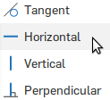
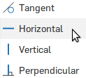

12. Create a plane for the nosecone tether sketch
- Start a new plane with the plane tool

- Select the top face of your tube.
- Set the offset to 1.25 in
- Click the "Opposite direction" button
 to make your plane fall inside your tube
to make your plane fall inside your tube - Click the green check


 
